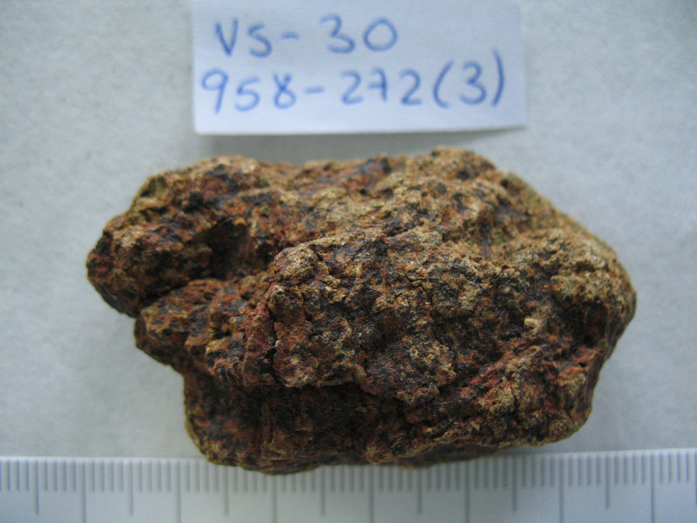
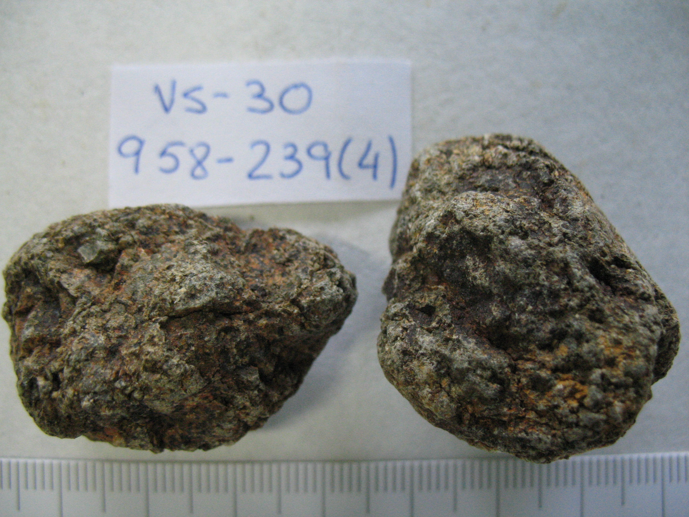
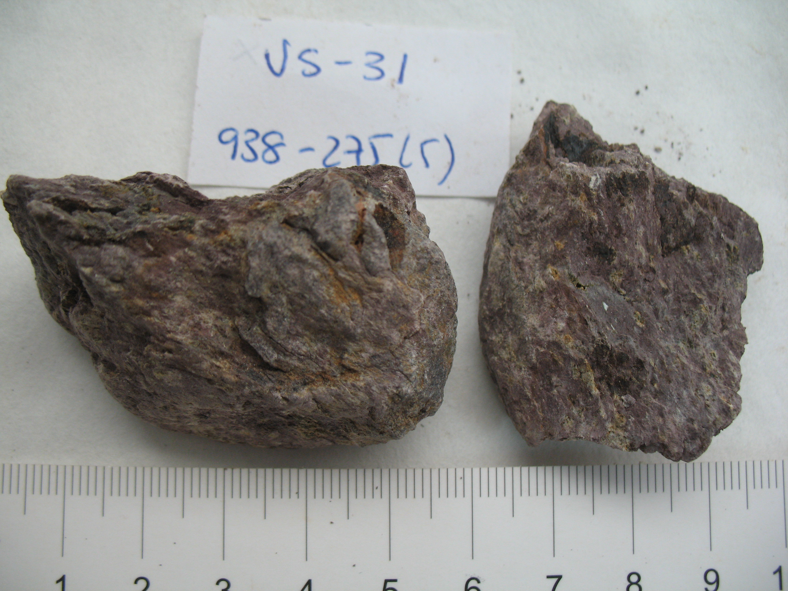
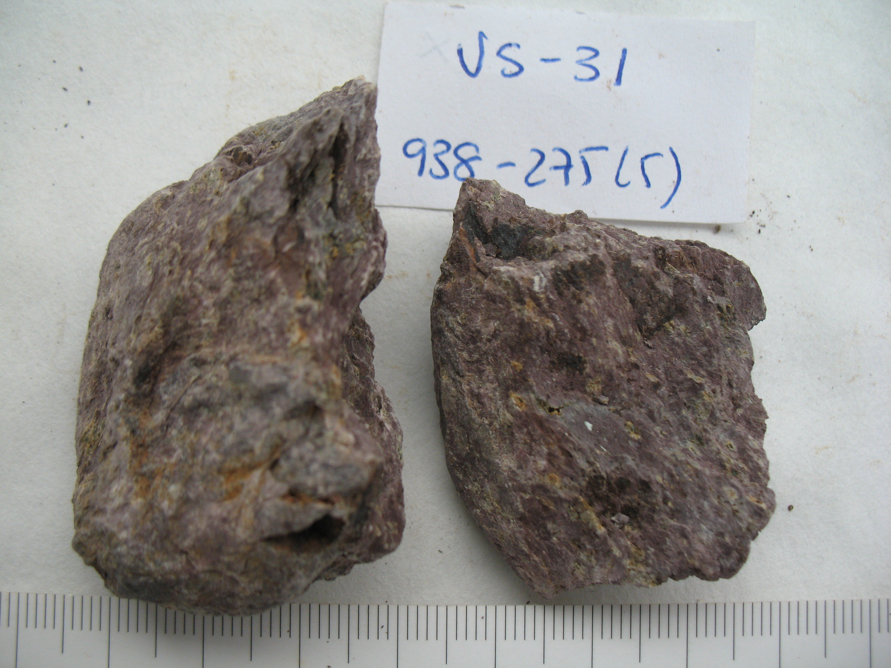

VS-30. Diabasa oscura granulosa
|
 |
Colores: |
Gris oscuro con tinciones pardo rojizo oscuro |
Color: |
- Gris oscuro: 10GY5/1, Gris verdoso - Tinciones pardo rojizo oscuro: 2.5YR4/6, Rojo |
||
| Color raya: | Gris |
 |
||||
| Grano: | Medio | |||||
| Dureza: | Navaja | |||||
| Friabilidad : | Media | |||||
| Forma: | Redondeada | |||||
| Exfoliación: | No exfoliable | |||||
| Esquistosidad: | No apreciable | |||||
| Tacto: | Granular grueso | |||||
| Densidad: | 2,419 g/ml | |||||
|
HCl 20%: |
No | |||||
| Observaciones: Las reprecipitaciones blancas que hemos identificado en superficie tienen abundante CaCO3 y dan reacción con HCl 20%. La densidad oscila entre 2,21 y 2,572 g/ml. Muestras guardadas: 958-239, 958-272 (3) |
|
GL |
Frecuencia |
Litolofacies: |
| 1840 | 7 | Diabasas y facies de contacto |
|
Litofacies secundarias: |
||
| 1860 | 1 |
Diabasas y facies de contacto |
VS-31. Toba-violeta
|
 |
Colores: |
Morado oscuro con puntos verde claro |
Color: |
- Morado oscuro: 5R6/2, Rojo pálido - Puntos verde claro: 10Y6/2, Oliva pálido |
||
| Color raya: | Violeta |  | ||||
| Grano: | Muy fino | |||||
| Dureza: | Uña - | |||||
| Friabilidad : | Media | |||||
| Forma: | Subangular | |||||
| Exfoliación: | No exfoliable | |||||
| Esquistosidad: | Apreciable | |||||
| Tacto: | Áspero (no granular) | |||||
| Densidad: | 2,737 g/ml | |||||
|
HCl 20%: |
No | |||||
| Observaciones: La roca alterada (fondo perfil) es friable y más blanda, en superficie resulta más dura, aunque probablemente se trate de materiales resistentes más ricos en cuarzo. La densidad oscila entre 2,385 y 2,988 g/ml. Muestras guardadas: 938-275 (5) |
|
GL |
Frecuencia |
Litolofacies: |
| 750 | 5 | Tobas verde - violetas SC |
|
Litofacies secundarias: |